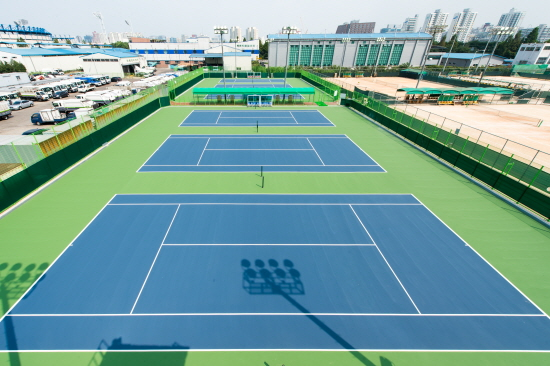

- History
- Schedule
- Members
- Ranking
1924년 목동에서 처음 시작된 남부 테니스 클럽은 100년의 역사를 자랑하는
목동의 테니스 강호이며 목동 테니스장을 홈으로 아직까지도 그 역사를
이어나가고 있다.

1935년 전국 노숙자 테니스대회 준우승
1947년 전국 친일파 테니스대회 장려상
1956년 전국 테니스치마 디자인대회 금상
1985년 전국 테니스공 빨리 줍기대회 금상
1994년 세계 테니스라켓 집어던지기 대회(World Tennis Racket Throwing) 준우승
2020년 세계 비대면 테니스대회(Zoom Tennis Tournement) 4강
(이하 340건의 수상)